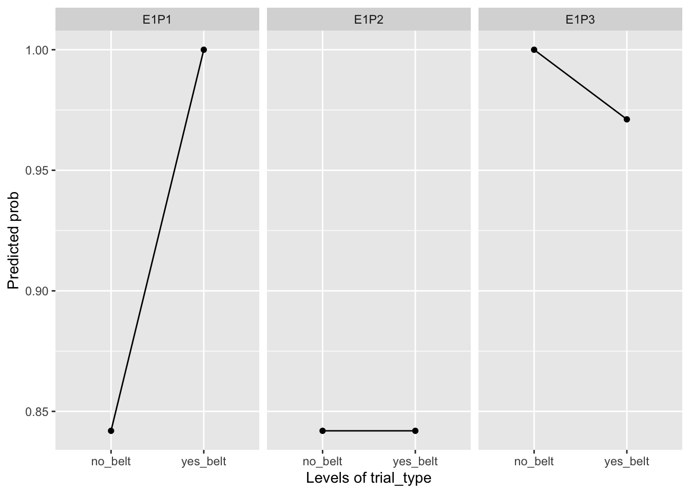
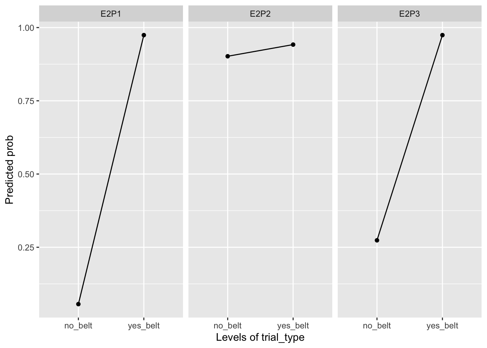

I have worked as a consultant with Statistical Consulting Services (SCS) at the University of Connecticut since July, 2022. As of August, 2023, I have held the title of SCS Administrative Specialist. For more details surrounding SCS and our mission, please visit https://statsconsulting.uconn.edu/. In this position, I have collaborated with a variety of students and faculty from departments such as Kinesiology, Psychology, Civil and Environmental Engineering, Physiology and Neurobiology, Speech and Language, School of Pharmacy, School of Social Work, and School of Public Health. I have also had the experience of working with external clients such as Hartford HealthCare. Working under Director of SCS, Dr. Timothy E. Moore, and these collaborative experiences have elevated my capabilities as a researcher, enhanced my proficiency in R, facilitated exploration into various statistical coding languages, and enriched my skills as an educator.
Projects
All projects are overseen by Dr. Timothy E. Moore.
Improving Firefighter Navigation with Haptic Feedback
Primary Contact: Andrew Slater, Ph.D. Candidate (Dept. of Biomedical Engineering)
Methods: We fit a logistic regression model on the binary response variable for success/failure. We include two fixed effects covariates for path and trial_type (belt vs. no belt), and include an interaction term between the two fixed effects covariates. We also include a random effect for ID, accounting for the fact that we have repeated observations on individual firefighters. By observing the fitted models, we are able to determine which covariates have a significant impact on the response (success/failure).
Conducted two experiments:
Experiment 1
Aim: Determine if NHC communication can outperform a pass-alarm in navigating to a disabled firefighter.
Tasks:
navigate to a specific location withing the environment either while seeking out a clearly audible PASS alarm, or while being guided by the V-T Belt system
determine the bearing to the target point at start of trail
determine bearing to start point at end of trial
Failure: timeout before reaching target location
Code
# package to examine the estimated marginal meanslibrary(emmeans)# estimated marginal meansem_glmm1 <-emmeans(glmm1, ~ trial_type | path)ip_glmm1 <-emmip(em_glmm1, ~ trial_type | path, type ="response", bias.adjust =TRUE)ip_glmm1

Experiment 2
Aim: Determine if NHC can better route an egress path for firefighters over traditional methods.
Tasks:
firefighter led through the building and asked to retrace steps back to starting location using tradition methods, or firefighter placed at the return starting point and used the V-Tbelt
determine the bearing to the target point at start of trail
determine bearing to start point at end of trial
Failure: timeout before reaching target or off return path for more than 20 seconds
Code
# package to examine the estimated marginal meanslibrary(emmeans)# estimated marginal meansem_glmm2 <-emmeans(glmm2, ~ trial_type | path)ip_glmm2 <-emmip(em_glmm2, ~ trial_type | path, type ="response", bias.adjust =TRUE)ip_glmm2

Bidirectional Relationship Between Food Security and Smoking
Primary Contact: Jon Phillips, Ph.D. (Assist. Prof., UConn School of Social Work)
Method: Cross-lagged panel models with covariates
Analyzing the Impact of Pacemaker Status on the Survival of Heart Transplant Patients
Primary Contact: Cesar Rodrigo Zoni, Postdoctoral Researcher (UCONN Health)
Method: Survival analysis utilizing multi-state modeling of time-to-event data
Comparing Outcomes in High-Risk Populations Before and After Adjusting Allocation and Prioritization of Organ Transplants
Primary Contact: William L. Baker, Pharm.D. (Assoc. Prof., Dept. of Pharmacy Practice)
Method: Multiple imputation by Fine and Gray competing risk models
Using 30-Day Modified Rankin Scale Score to Predict 90-Day Score in Patients with Intracranial Hemorrhage: Derivation and Validation of Prediction Model
Primary Contact: William L. Baker, Pharm.D. (Assoc. Prof., Dept. of Pharmacy Practice)